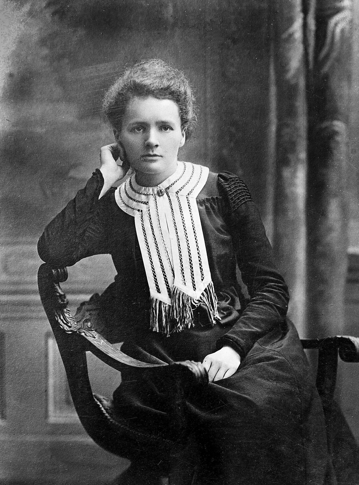

Born in Warsaw
Maria Skłodowska was born in Warsaw, then part of the Russian Empire.
A Tribute to a Pioneer of Science
A scientist whose curiosity changed our understanding of radioactivity.
Explore Her Story
Marie Curie, public-domain portrait from Wikimedia Commons.
HER LIFE
Marie Skłodowska-Curie was born in Warsaw in 1867 and grew up in a family that valued education. She eventually moved to Paris to continue her studies, where she studied physics and mathematics at the Sorbonne. Her determination to learn helped her build a scientific career at a time when opportunities for women in higher education and research were limited.
After meeting Pierre Curie, she found a partner who shared her fascination with science. Together they investigated the mysterious radiation associated with uranium. Their work led to the discovery of two new elements, polonium and radium. Marie named polonium in honour of her native Poland.
Marie's contribution went beyond discovering elements. Through painstaking experiments, she developed ways to study and isolate radioactive substances. Her research helped establish radioactivity as an important scientific field and contributed to later applications of radiation in medicine.
After Pierre Curie's death in 1906, Marie continued their scientific work and took on major academic responsibilities. During the First World War, she helped organize mobile X-ray services. Her life demonstrates how persistence, careful observation and a willingness to challenge accepted ideas can create lasting change.
“Nothing in life is to be feared, it is only to be understood.”
— Marie Curie
KEY MOMENTS
Maria Skłodowska was born in Warsaw, then part of the Russian Empire.
She moved to Paris and pursued higher education at the Sorbonne.
Marie and Pierre Curie announced the discovery of polonium and later radium.
Marie Curie shared the Nobel Prize in Physics with Pierre Curie and Henri Becquerel.
She received a second Nobel Prize, this time for her work in chemistry and radioactivity.
During World War I, she helped organize mobile X-ray services for medical care.
Marie Curie died in France, leaving a scientific legacy that continues to influence science and medicine.
HER LEGACY
Marie Curie's influence extends far beyond the discoveries recorded in textbooks. She became a symbol of scientific perseverance and inspired generations of women in science. Her work helped transform radioactivity from a puzzling observation into a major field of research.
Her achievements remain a reminder that meaningful scientific progress often begins with asking difficult questions and continuing to investigate when answers are not immediately available.